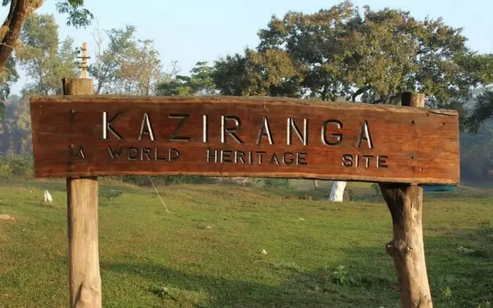
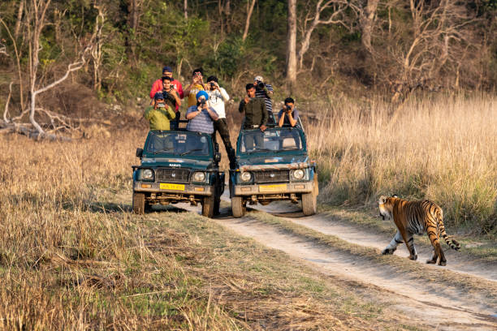
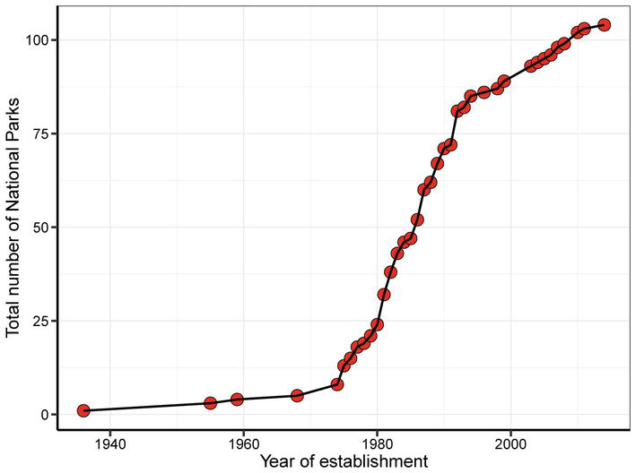

National Parks In India
Introduction To National Parks Of India
A national park is a natural park in use for conservation purposes, created and protected
by national governments. Often it is a reserve of natural, semi-natural, or developed land
that a sovereign state declares or owns. Although individual nations designate their own national parks
differently, there is a common idea: the conservation of 'wild nature' for posterity and as a symbol of national pride
There are 106 existing national parks in India covering an area of 44,378 km2 (17,134 sq mi), which is 1.35% of the
geographical area of the country (National Wildlife Database, Dec. 2020). In addition to the above, 75 other National
Parks covering an area of 16,608 km2 (6,412 sq mi) are proposed in the Protected Area Network Report.
The network of parks will go up 176 after full implementation of the above report.
Hemis National Park is largest national park with an area 4,400 km² of while South Button Island National Park is
smallest with an area of just 5.19 km².
According to the Indian Ministry of Environment & Forests, a national park is "[a]n area,
whether within a sanctuary or not, [that] can be notified by the state government to be constituted as a National Park,
by reason of its ecological, faunal, floral, geomorphological, or zoological association or importance, needed to for the
purpose of protecting & propagating or developing wildlife there in or its environment. No human activity is permitted
inside the national park except for the ones permitted by the Chief Wildlife Warden of the state under the conditions
given in CHAPTER IV, WPA 1972".[1]
India is home to a rich diversity of flora and fauna, and the country's national parks play an important role in
protecting and preserving this natural heritage. Some of the most well-known national parks in India include Kaziranga
National Park in Assam, which is home to two-thirds of the world's one-horned rhinoceros population, and Kanha National
Park in Madhya Pradesh, which is said to have inspired Rudyard Kipling's classic novel, The Jungle Book. Other popular
national parks in India include Bandhavgarh National Park
Ranthambore National Park, and Jim Corbett National Park, all of which are known for their tigers. India has a total
of 104 national parks, spread across 31 states and union territories, covering an area of over 40,500 square kilometers.
These parks provide a wide range of opportunities for nature lovers, from wildlife safaris and bird watching to hiking and
camping. They also play a crucial role in promoting conservation and sustainable tourism in the country.
Top National Parks in India and Their Unique Features
India is home too many national parks that are known for their diverse wildlife and beautiful landscapes. Here are some of the top national parks in India along with their unique features and figures:
1.Kaziranga National Park:
Kaziranga National Park - Located in Assam, Kaziranga is home to the world's largest population of one-horned rhinoceroses.
It covers an area of 430 square kilometers and also hosts a significant number of tigers, elephants, and water buffaloes.

2.Jim Corbett National Park
Jim Corbett National Park - Located in Uttarakhand, Jim Corbett National Park is known for its Bengal tigers and Asiatic elephants. It covers an area of 520 square kilometers and is also home to various species of birds and reptiles.
3.Bandhavgarh National Park
Bandhavgarh National Park - Located in Madhya Pradesh, Bandhavgarh National Park is known for having the highest density of Bengal tigers in the world. It covers an area of 437 square kilometers and also hosts a significant population of leopards, deer, and other animals.

4.Sunderbans National Park :
Sunderbans National Park - Located in West Bengal, Sunderbans is the largest mangrove forest in the world and is home to the Bengal tiger, saltwater crocodile, and various species of birds and reptiles. It covers an area of 1,330 square kilometers and is also a UNESCO World Heritage Site.
5.Gir National Park :
Gir National Park - Located in Gujarat, Gir National Park is the only place in the world where you can find Asiatic lions. It covers an area of 1,412 square kilometers and also hosts various other species of animals such as leopards, hyenas, and crocodiles.
6.Periyar National Park:
Periyar National Park - Located in Kerala, Periyar National Park is known for its beautiful landscape and diverse wildlife. It covers an area of 925 square kilometers and is home to elephants, tigers, sambar deer, and various species of birds.

Importance of National Parks in India for Conservation and Ecotourism
National Parks in India play a crucial role in the conservation of the country's rich biodiversity and ecological resources. These protected areas provide a sanctuary for a wide range of endangered and threatened species, including tigers, elephants, rhinoceroses, and many more. They also serve as important habitats for migratory birds and other wildlife. The conservation efforts within these parks have helped to maintain the ecological balance and preserve the natural heritage of the country.
In addition to their conservation importance, national parks in India also play a vital role in promoting ecotourism. They provide visitors with opportunities to experience and appreciate the beauty of nature while also learning about the importance of conservation. Ecotourism generates revenue for local communities and helps to create awareness about the value of preserving these natural habitats. It also promotes sustainable development, as the revenue generated from ecotourism is reinvested in the conservation and management of these parks.
Overall, the importance of national parks in India for conservation and ecotourism cannot be overstated. They serve as critical habitats for a diverse range of plant and animal species, while also providing visitors with unique experiences that promote awareness and appreciation of nature. The continued protection and conservation of these parks are essential for preserving India's rich biodiversity and ecological resources for future generations.
Challenges Faced by National Parks in India

National parks in India face several challenges in their conservation efforts. Here are some of the major challenges faced by National Parks in India:
- Human-Wildlife Conflict: National parks in India are home to a wide range of wildlife species.
With increasing human populations, encroachment, and habitat destruction, wildlife often ventures
into human settlements leading to conflict. This conflict can lead to injury or death of both humans and animals
, leading to a negative attitude towards wildlife conservation.
- Poaching and Illegal Wildlife Trade: Poaching and illegal wildlife trade are one of the biggest challenges faced
by national parks in India. India is home to some of the world's most endangered species like tigers, elephants,
and rhinos, which are targeted by poachers for their valuable body parts and skin.
- Habitat Destruction: Rapid urbanization and agricultural expansion have led to the destruction of natural habitats,
which is one of the major threats to wildlife conservation. Deforestation, land-use change, mining, and other developmental
activities have caused irreversible damage to ecosystems..
- Climate Change: Climate change is a global phenomenon that poses a significant threat to biodiversity. Rising temperatures,
changing rainfall patterns, and extreme weather events are affecting the distribution, behavior, and survival of many species.
- Lack of Resources: National parks face a shortage of resources, including funding, manpower, and infrastructure. This can hinder
their conservation efforts and limit their ability to protect wildlife and their habitats.
"Explore, enjoy, and preserve national parks for generations to come."
Initiatives Taken for the Development and Management of National Parks in India
AIndia followed the “preservationism” model for biodiversity conservation during the initial establishment of protected areas, but it resulted in increased conflicts with local people. In order to buffer conflicts of the local people, India was the first country to introduce the concept of “Joint Forest Management” in its National Forest Policy, 1988, which has the provision of involving the local communities for sustainable conservation and management of forests. Thus, there is a shifting paradigm from “preservationism” to “sustainable use” approach during the recent times. This approach is managing forest resources with varying degrees of success by taking care of community needs and aspirations for the past 30 years. Although rural communities and forest officers are developing a positive attitude toward forest conservation, there are still some concerns like the functioning of forest committee, the role of women, freedom of working, and participatory approach in forest conservation and management.
1.Conservation
The human-wildlife conflict was one of the major challenges for the conservation of species within protected areas. The government of India launched the eco-development project in the 1990s, to minimize such conflicts and effective conservation. In order to promote human security and protecting biodiversity simultaneously, the government of India introduced financial compensation as a policy against human-wildlife conflicts around the protected areas of the country. Similarly, some compensation incentives are instituted in Wildlife Trust of India (WTI) in response to crop damage, livestock, or human injuries caused by wildlife in protected areas. For example, crop loss due to wildlife is compensated by providing equivalent incentives under the “grain-for-grain” scheme in Pakke Tiger Reserve and northeast states of India [35]. Similarly, active bio-fences consisting of beehives or defensive crops (with pungent smell and thorns) were used to keep away elephants and other wild animals in Kaziranga National Park of Assam..
2.Resource use
Often resource use in many protected areas of the country is banned or restricted. According to the Supreme Court orders (dated 14.02.2000 and 21.02.2000 in I.A. No. 548 in WP No. 202/1995), the removal of dead, diseased, dying, or wind-fallen trees, driftwood, and grasses, etc. is restrained from any national park or game sanctuary [36]. This develops conflicts among the local people and forest officials, which is one of the major challenges for sustainability in protected areas. Later, the Government of India enacted the Scheduled Tribes and Other Traditional Forest Dwellers (Recognition of Forest Rights) Act, 2006, with provisions to acknowledge rights within forests including within protected areas. Until recently, bamboo has been considered as a “tree” in the country under the Indian Forest Act, 1927, and its felling and transit required prior permission from the forest department. However, a recent amendment has taken out bamboo from the category of “trees,” and now local farmers can freely cultivate and harvest bamboo..

Photo by Kevin Dooley
What next?
If you found this article useful, might you consider telling your colleagues or mentioning it on your website?
You might also be interested in our other articles on How to conserve National parks.
And you might like to take a look at our – it's a big help for finding energy waste (step 2) and tracking progress at making savings (step 4):